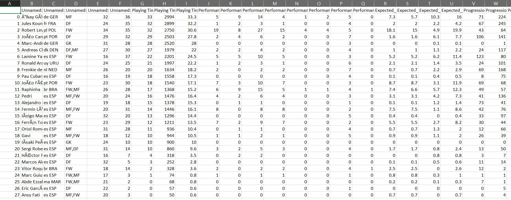

This page provides insights into the processes and methodologies used for collecting data in our project.
Data Collection
The data for this project was collected by scraping FBref.com, a reliable source for detailed football statistics. I utilized web scraping techniques to extract data on player performance, match statistics, and league standings. This information was then cleaned and prepared for further analysis.
Specifically, I navigated to the player statistics section to gather key metrics such as goals, assists, passes, and defensive actions. Screenshots of the scraping process are provided below:
Website DataExtracting player statistics and match data.

Scrapper Data
Data Cleaning
Data cleaning is a critical step in the data collection process, ensuring that our dataset is accurate, consistent, and usable for analysis. Below are the key steps we followed:
1. Loading the Dataset
We began by loading the dataset from a merged CSV file named all_seasons_merged.csv using Python’s Pandas library:
import pandas as pd
# Load the dataset
file_path = 'all_seasons_merged.csv' # Update this with your actual file path
df = pd.read_csv(file_path)
2. Renaming Columns
To enhance clarity, we created a dictionary to rename the columns in our dataset. This involved replacing unclear or generic column names with descriptive ones, making the data more understandable:
# Create a dictionary with old and new column names
column_rename_dict = {
'Unnamed: 0': 'Index',
'Unnamed: 0_level_0_Player': 'Player',
'Unnamed: 1_level_0_Nation': 'Nation',
'Unnamed: 2_level_0_Pos': 'Position',
'Playing Time_MP': 'Matches Played (MP)',
# Add more renaming as needed
}
# Rename the columns using the dictionary
df.rename(columns=column_rename_dict, inplace=True)
# Save the updated dataframe to a new CSV file
df.to_csv('all_seasons_renamed.csv', index=False)
3. Removing Players with No Minutes Played
To ensure data quality, we removed players with no minutes played. This involved two steps:
First, we dropped rows where the Minutes Played (Min) column had blank entries:
# Remove players with no minutes played (blank)
df = df.dropna(subset=['Minutes Played (Min)'])
Next, we filtered out players who had zero minutes played:
# Now, remove rows where 'Minutes Played (Min)' is 0
df = df[df['Minutes Played (Min)'] > 0]
4. Removing Aggregate Rows
Next, we eliminated rows that contained aggregate data, such as Squad Total and Opponent Total. This step was crucial to focus on individual player performances:
# Remove rows with 'Squad Total' or 'Opponent Total'
df = df[~df['Player'].isin(['Squad Total', 'Opponent Total'])]
5. Dropping Unnecessary Columns
We checked for any unnecessary columns in the dataset, such as the Index column, and removed it to streamline our data for analysis:
# Check if 'Index' column exists before dropping it
if 'Index' in df.columns:
df.drop(columns=['Index'], inplace=True)
6. Final Review
After completing these cleaning steps, we conducted a final review of the dataset. We printed the cleaned DataFrame to verify its integrity and saved the final version to cleaned_dataset_no_index.csv:
# Print the cleaned DataFrame
print(df.head())
# Save the cleaned dataset to a new CSV file
df.to_csv('cleaned_dataset_no_index.csv', index=False)
Data Visualizations
Data visualizations are essential for interpreting complex datasets and conveying insights effectively. By representing data visually, we can identify patterns, trends, and outliers that may not be apparent in raw data. Below are some of the visualizations we created to illustrate key findings from our analysis:
Top 10 Players by Goals Over Seasons
Goals per Season
Top Players by Goals Across Seasons
Minutes Played vs. Goals Scored
Goals and Assists per 90 Minutes by Season
Distribution of Goals per 90 Minutes by Position
Proportion of Red and Yellow Cards
Density Plot - Expected Goals (xG) vs Non-Penalty xG (npxG)